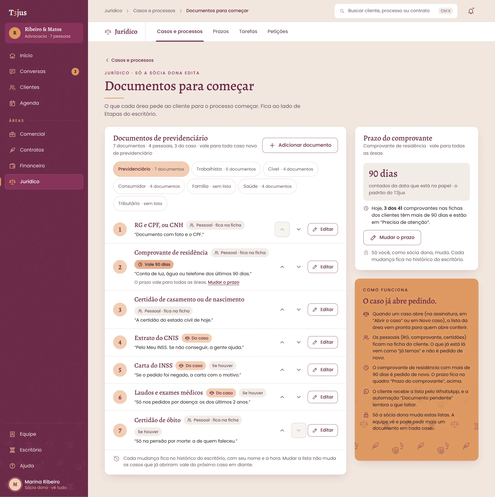

pz-ver
Documentos para começar com o prazo
Marina, sócia dona. Ao lado da lista por área, a folha nova “Prazo do comprovante”: 90 dias, contados da data do papel, o padrão do T3jus; hoje, 3 dos 41 comprovantes passaram. No item do comprovante, “Vale 90 dias” e “Mudar o prazo”, que abre a folha em edição. O “Como funciona” aponta para a folha.
Abrir: prazo.html?estado=pz-ver